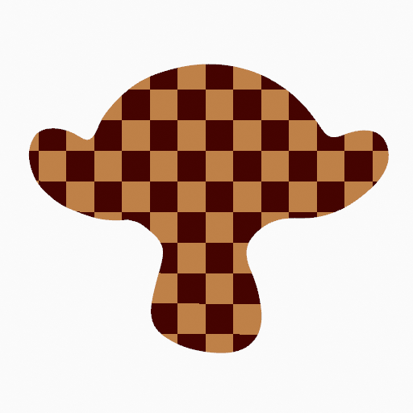
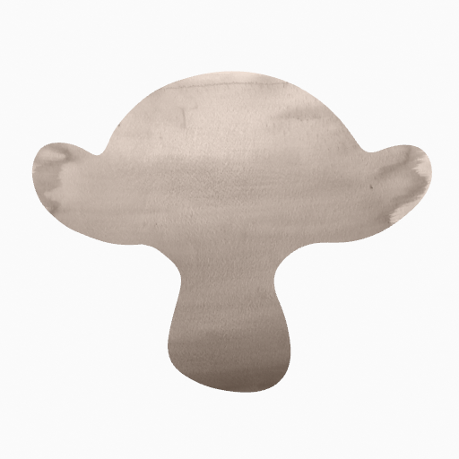

Grease Pencil Shader¶
Shader panel with only Stroke component activated.
The Grease Pencil Shader create a material that can work with strokes and/or filled areas of a Grease Pencil Object.
Stroke and fill components has it own section panel and they can be enabled with a checkbox on the panel header.
Stroke only has effect on the lines and Fill only on the areas determined by closed lines (by connecting the lines start and end points).
Note
The shader is not yet a BSDF capable shader to interact with Blender lights and can only be setting up on the Material Properties panel (it is not a shader node).
Properties¶
Stroke¶
When enabled, the shader use the stroke component. The Stroke component controls how to render the edit lines.
- Mode Type
Defines how to display or distribute the output material over the stroke.
- Line
- Connects every points in the strokes showing a continuous line.
- Dots
- Use a disk shape at each point in the stroke. The dots are not connected.
- Boxes
- Use a box shape at each point in the stroke. The boxes are not connected.
- Style
The type of the material.
- Solid
Use a solid color.
- Color
- The color of the stroke.
- Texture
Use an image texture.
- Image
- The image data-block used as an image source.
- UV Factor
- The image size along the stroke.
- Use As Stencil Mask
When enabled, use the image alpha as a stencil mask.
- Color
- Color to use on not transparent areas of the image.
- Mix Color
When enabled, mix the image with a certain color.
- Factor
- Mixing amount.
- Color
- The color to mix.
- Alignment
Defines how to align the Dots and Boxes along the drawing path and with the object’s rotation.
- Path
- Aligns to the drawing path and the object’s rotation.
- Object
- Aligns to the object’s rotation; ignoring the drawing path.
- Fixed
- Aligns to the screen space; ignoring the drawing path and the object’s rotation.
{kind=link}
{kind=link}
{kind=link}
{kind=link}
Fill¶
When enabled, the shader use the fill component. The Fill component control how to render the filled areas determined by closed edit lines.
- Style
The type of material.
- Solid
Use solid color.
- Color
- The color of the fill.
- Gradient
Use a color gradient.
Gradient Type
- Linear
- Mix the colors along a single axis.
- Radial
- Mix the colors radiating from a center point.
- Color.
- The primary color.
- Secondary color.
- The secondary color.
- Mix Factor
- Primary and secondary colors mixing amount.
- Flip colors
- Flips the gradient, inverting the primary and secondary colors.
- Location
Shifts the gradient position.
X, Y
- Scale
Scales the gradient.
X, Y
- Angle
- Rotates the gradient.
- Checkerboard
Use a checkered pattern.
- Color.
- The primary color.
- Secondary color.
- The secondary color.
- Flip colors
- Invert the primary and secondary colors.
- Location
Shift the checkered pattern position.
X, Y
- Scale
- Overall checkered pattern scale.
- Angle
- Rotate the checkered pattern.
- Box Size
- Sets the box size of the checkered pattern.
- Texture
Use an image texture.
- Image
- The image data-block used as an image source.
- Use As Stencil Mask
When enabled, use the image’s alpha as a stencil mask.
- Color
- Color to use on not transparent areas of the image.
- Offset
Shifts the image position.
X, Y
- Scale
Scales the image.
X, Y
- Angle
- Rotates the image.
- Opacity
- The texture’s transparency.
- Clip Image
- When enabled, show one image instance only (do not repeat).
- Mix With Color
When enabled, mix the image with a certain color.
- Factor
- Mixing amount.
- Color
- Color to mix.

Style: Checkerboard. |

Style: Texture. |
{kind=link}
{kind=link}
{kind=link}
{kind=link}